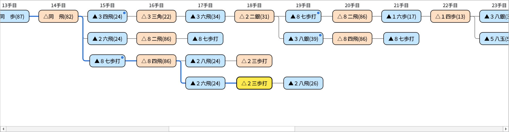
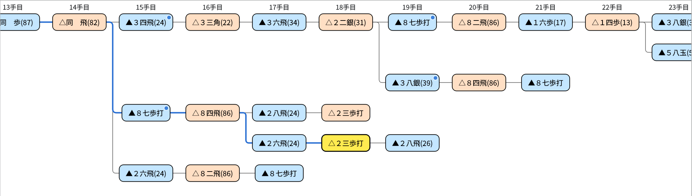
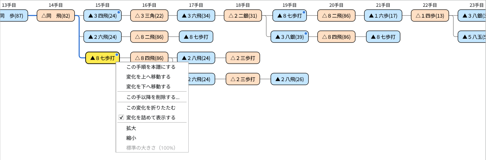
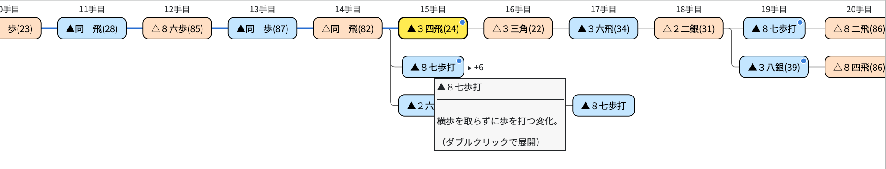
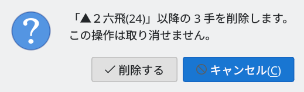
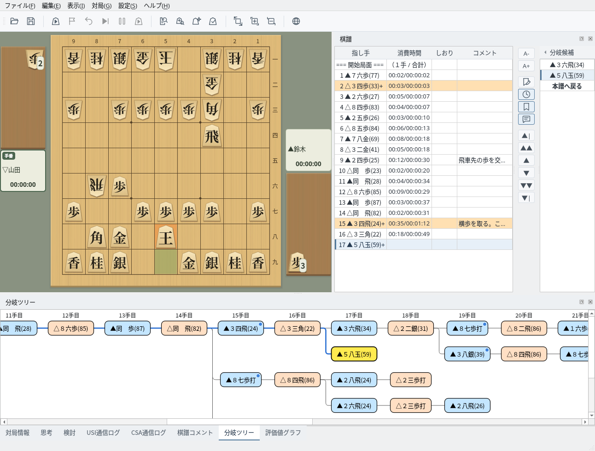

分岐ツリー
本譜と変化の手順を一覧し、右クリックで整理・編集できます
分岐ツリーの見かた
本譜と変化の手順を、手数をそろえて並べます
画面下部の「分岐ツリー」タブを選ぶと表示されます。左端の「開始局面」から、いちばん上の段に本譜、その下に変化の手順が、手数をそろえて並びます。棋譜を読み込んだときのほか、対局中に指した手もすぐに加わります。パネルの配置はドック機能で変えられます。棋譜欄と分岐候補の使い方は棋譜表示を参照してください。
- 青い枠は先手の手、オレンジの枠は後手の手です。
- 黄色の手は、いま盤面に表示している手です。棋譜欄・棋譜コメントと同じ手を示します。
- 開始局面から黄色の手までの線は、青い太線で示されます。
- 同じ手から分かれた変化は、縦の線でつながります。
- コメントのある手には、右上に青い丸が付きます。手にマウスを重ねると、指し手とコメントの先頭が表示されます。
- 上端の「n手目」の見出しは、縦にスクロールしても上端に表示されたままです。
黄色の手が画面の外にあるときは、その手が見える位置まで自動でスクロールします。


分岐ツリー：変化の中の変化（18手目）を表示中。開始局面からの経路が青い線、コメントのある手が青い丸で示される
変化は、分かれた手順より下の段のうち、空いている段に詰めて表示されます。同じ段に別の変化を並べるときは、続いた手順に見えないよう1手分の間隔を空けます。
右クリックメニューの「変化を詰めて表示する」のチェックを外すと、変化ごとに1段ずつ、変化の順番どおりに並べて表示します。この設定は次回も引き継がれます。


「変化を詰めて表示する」を外したところ（上と同じ棋譜）
移動と表示の操作
クリックやキーで局面を移動し、表示の大きさを変えられます
手をクリックすると、その局面に移動します。盤面・棋譜欄・分岐候補も同じ手に切り替わります。分岐ツリーをクリックしたあとは、次のキーでも移動できます。
| キー | 動作 |
|---|---|
| ← / → | 同じ手順の1手前・1手先の手へ（開始局面で → を押すと本譜の1手目） |
| ↑ / ↓ | 同じ手数の、すぐ上・すぐ下の段の手へ |
| Home | 開始局面へ |
| End | その手順の最後の手へ |
対局中・棋譜解析中・局面編集中は、手を選んだり編集したりできません。折りたたみや拡大・縮小などの表示の操作はできます。
Ctrl＋ホイール（macOS では ⌘＋ホイール）、トラックパッドのピンチ、右クリックメニューの「拡大」「縮小」で、表示の大きさを50%〜200%の範囲で変えられます（ホイールとメニューでは10%ずつ）。「標準の大きさ（100%）」で元の大きさに戻ります。表示の大きさは次回も引き継がれます。
分岐ツリーで右クリックすると、右クリックした場所に応じて次の項目が表示されます。
| メニュー | 表示されるとき | 動作 |
|---|---|---|
| この手順を本譜にする／変化を上へ移動する／変化を下へ移動する／この手以降を削除する… | 開始局面以外の手を右クリックしたとき（対局中・棋譜解析中・局面編集中を除く） | 分岐を編集します（分岐を編集する） |
| この変化を折りたたむ／この変化を展開する | 本譜以外の変化の手を右クリックしたとき（2手以上ある変化か、先で分かれる変化） | 変化の続きを隠す・表示する（変化を折りたたむ） |
| すべての変化を展開する | 折りたたんだ変化があるとき | 折りたたんだ変化をすべて元に戻します |
| 変化を詰めて表示する | いつでも | 変化を空いている段に詰めて表示するかを切り替えます |
| 拡大／縮小／標準の大きさ（100%） | いつでも | 表示の大きさを変えます |


変化の手（15手目の▲８七歩打）を右クリックしたところ
変化を折りたたむ
長い変化を隠して、見たい手順を見やすくします
変化の手を右クリックして「この変化を折りたたむ」を選ぶと、その変化の先頭の手だけを残し、続きの手と、その先で分かれた変化を隠します。先頭の手は点線の枠になり、右に隠れた手数が「▸ +n」と表示されます。マウスを重ねると「（ダブルクリックで展開）」と表示されます。
元に戻すには、先頭の手をダブルクリックするか、右クリックして「この変化を展開する」を選びます。折りたたんだ変化があるときは、右クリックメニューの「すべての変化を展開する」でまとめて元に戻せます。
棋譜欄や分岐候補から隠れている手へ移動したときは、自動で展開されます。表示中の手が隠れたときは、折りたたんだ変化の先頭の手が黄色になります。


15手目の▲８七歩打の変化を折りたたんだところ（続きの手と先の変化の計6手を隠している）
分岐を編集する
右クリックで、本譜の入れ替え・変化の並べ替え・削除ができます
分岐ツリーの手、または棋譜欄の右にある「分岐候補」の手を右クリックすると、次の操作ができます。使えない操作は灰色で表示されます。編集すると棋譜は未保存の状態になるので、必要に応じて保存してください。
| メニュー | 動作 |
|---|---|
| この手順を本譜にする | 開始局面からその手までの手順を本譜にします。その手より先は、続いている手順（いちばん上の変化）がそのまま本譜になります。本譜の手では使えません。 |
| 変化を上へ移動する／変化を下へ移動する | その手を含む変化を、同じ手から分かれた変化の中で1つ上・1つ下へ移します。いちばん上の変化が、その分かれ目での本譜側になります。分岐候補の並び順と、保存したときの変化の順番も変わります。 |
| この手以降を削除する… | その手と続きの手順、その先で分かれた変化を削除します。削除する手数を確かめて「削除する」を押すと削除します（元に戻せません）。表示中の手が削除されるときは、削除した手の1手前に移動します。 |


削除の確認：削除する手数が表示される
盤上で指して変化を加える
対局していないときに盤上で指した手を、棋譜に記録します
対局・棋譜解析・検討・局面編集などをしていないときに盤上で駒を動かすと、その手が表示中の手の次の手として棋譜に記録されます。
- 次の手がまだ無いとき：その手順の続きになります
- 同じ手が既にあるとき：その手へ移動するだけです
- 違う手のとき：新しい変化になり、分岐候補と分岐ツリーに表示されます
成る・成らないは確認されます。投了などの終局手を表示しているときは、その直前の局面から指した手になります。起動直後など棋譜が空のときも、表示している局面から記録を始めます。新しい手を記録すると、棋譜は未保存の状態になります。


16手目を表示して▲５八玉と指したところ：17手目の新しい変化になり、分岐候補と分岐ツリーに表示される